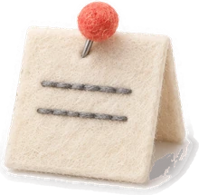
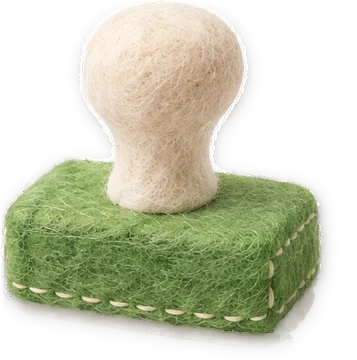
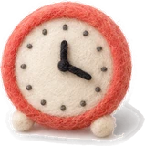
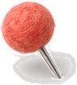
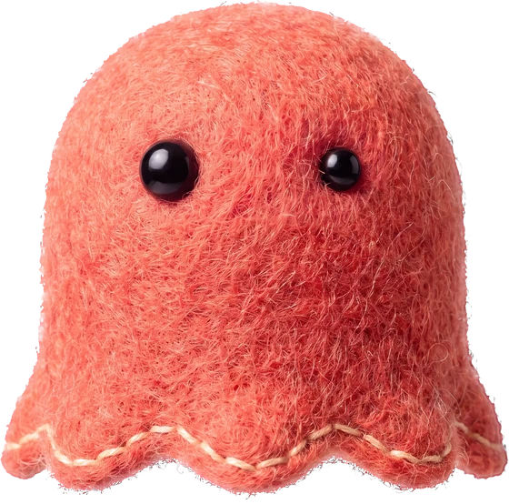

1일차 하늘 수영장
처음이라 가장 쉬운 근무지부터 시작해요.
코인을 불러오고 있어요.공통 차고 →
안내문을 읽고,
들어갈 수 있는 손님만 통과!
수영장, 도서관, 미술관, 공원 음악회까지. 그날의 규칙을 읽고 손님의 표와 짐을 확인해서 도장을 찍어요.
처음이라 가장 쉬운 근무지부터 시작해요.
코인을 불러오고 있어요.공통 차고 →
안내문의 규칙을 모두 지킨 손님만 들여보내요. 하나라도 어기면 거절하고, 어느 규칙 때문인지 골라요.

1안내문 읽기오늘의 규칙은 세 줄이에요. 근무 중에 알림이 더해질 수도 있어요.
3도장 찍기다 지켰으면 통과. 하나라도 어기면 거절하고 이유가 된 규칙을 골라요.안녕하세요!

7월 12일 토요일오후 2시 2분
보여 준 표나 카드가 없어요.
안내문을 읽고 도장을 골라요.
어느 규칙 때문에 거절할까요? 안내문에서 골라요.
고마워요!
왜?

공원 관리실 · 오후 6시 25분이 알림은 안내문 ④번으로 붙어요. 지금부터 오는 손님은 이 규칙도 지켜야 해요.

이 기기에 남은 읽기 기록이에요. 돋보기를 쓴 도장은 「혼자 해냄」으로 세지 않아요. TOPIK 급수와는 관계없어요.